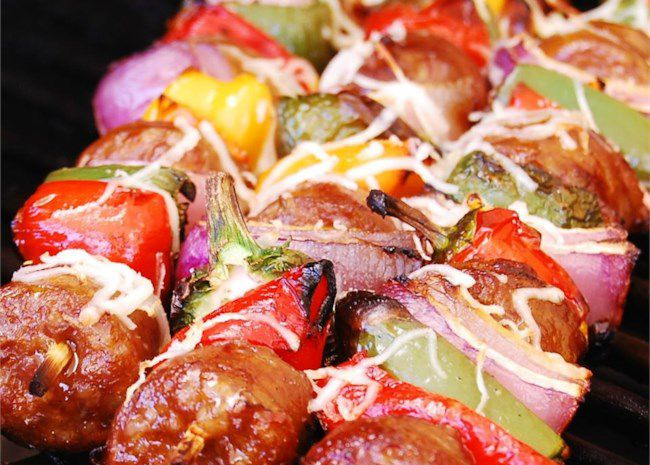

BBQ Sausage and Peppers

Description
Sausages marinate in beer with red bell peppers, jalapeno peppers, and red onions. String disks of sausage and pieces of veggies onto skewers and grill, melting provolone cheese over the top during the final few minutes of cooking. Bd.weld gives this recipe 5 stars: "Spicy good. I use shredded provolone hot Italian sausage and different colored peppers along with the jalapeno. These are really good with or without the provolone."
Ingredients
- 2 pounds spicy Italian sausage, sliced
- 1 large red bell pepper, cut into large chunks
- ¼ pound jalapeno peppers, cut into large pieces
- 1 large red onion, cut into chunks
- 1 (12 fluid ounce) can beer
- ½ pound sliced provolone cheese
Steps
- Place sausage, red bell pepper, jalapeno peppers, and red onion in a large bowl. Pour in beer. Cover, and marinate in the refrigerator at least 1 hour.
- Preheat an outdoor grill for high heat, and lightly oil grate.
- Alternately thread sausage, red pepper, jalapenos, and onion onto skewers. Cook on the prepared grill until sausage is evenly brown and vegetables are tender. Melt provolone cheese over the hot ingredients during the last few minutes of cooking.